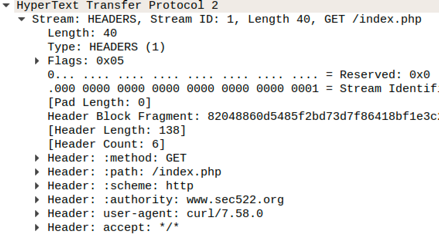

Inspecting HTTP/2 Traffic and Crafting Requests
Objectives
Estimated Time: 10 minutes
Part 1:
In this exercise, you will inspect HTTP/2 traffic to better understand how it differs from HTTP/1.1
Part 2:
First, you will try to use an authentication token retrieved in one request to send a second request. The section half of this exercise will teach you how to impersonate a valid browser using simple tools like "curl". You will first collect a request from a regular browser to create a "fingerprint" of the browser. Next, you will use "curl" to create a request that matches the fingerprint.
Part 3:
This exercise is an extension to the previous two exercises where the crafting of headers have to be exact.
Requirements
- [x] Lab VM
Part 1: Inspecting HTTP/2 Traffic
No Hints
You will be using Wireshark to inspect an HTTP/2 packet capture. The packet capture can be found in /home/student/Documents/pcaps/http2.pcap. Find out which headers you can identify in the HTTP/2 request and response.
Step by Step
-
Open Wireshark by clicking on the blue "fin" on the left.
Wireshark icon
-
Open the packet capture using either Ctrl+O or "File" > "Open" from the Wireshark menu. Navigate to /home/student/Documents/pcaps and open the file "http2.pcap" (you may find the file still listed as a "Recent" file, which may make things easier).
-
Select packet #15 and investigate the middle pane of Wireshark. Expand the "Hypertext Transfer Protocol 2" section by clicking on the triangles to the left until you see the headers:

Wireshark Details
-
Using Wireshark, answer these questions about the request:
Which user agent was used to collect the data?
curl/7.58.0
Which hostname did the client connect to?
-
Now select packet #21 and again inspect the HTTP/2 part in more detail. This packet contains the response.
What status code did the server return?
200
Which server version did we use?
Apache 2.4.29
Feel free to inspect any additional items in this sample.
Part 2: Acquire and play back token
No Hints
The CSRF/ proof service at http://lab-1.2.sans.labs/authservice/index.php gives you a special token
Step by Step
-
Open a terminal (click the "Terminal" icon on the left)
-
Use "curl" to send a PUT request to http://lab-1.2.sans.labs/authservice/index.php
curl -iX PUT http://lab-1.2.sans.labs/authservice/index.phpThe return will include an "Auth-Token" header:
HTTP/1.1 200 OK Date: Thu, 11 Mar 2021 02:56:38 GMT Server: Apache/2.4.38 (Debian) X-Powered-By: PHP/7.4.15 Auth-Token: [use this value for the next step] Vary: Accept-Encoding Content-Length: 89 Content-Type: text/html; charset=UTF-8 -
Now create a request to http://lab-1.2.sans.labs/authservice/test.php using this Auth-Token header (replace "TOKEN" with the value you received in step 2.
curl -i -H 'Auth-Token: <Token you got earlier>' http://lab-1.2.sans.labs/authservice/test.phpThe return will let you know if you got it right
Part 3: Spoofing an HTTP Request
No Hints
The exercise starts at http://lab-1.2.sans.labs/spoofchallenge/index.html . The page includes brief instructions showing you how to proceed.
-
Open http://lab-1.2.sans.labs/spoofchallenge/index.html in Chrome.
-
Click on the "Step 1" link. This will open the page fingerprint.php and display your browser fingerprint.
-
Click "Save Fingerprint". You will now see the saved fingerprint in the lower half of the page.
-
Open a terminal window (for example by clicking on the "Terminal" icon on the left)
-
Enter:
curl http://lab-1.2.sans.labs/spoofchallenge/fingerprinttest.phpYou will see a number of errors due to missing or incomplete headers.
-
Now add individual headers using the curl "-H" option. For example to add the User-Agent header use (the URL in the end is abbreviated. Use the same URL as in step 5).
curl -H "User-Agent: [some user agent]" http://www... -
Add more headers. Read the error messages for any missing headers, or values that you do not have right yet.
-
As you add the "Accept:" header, the output may be compressed and you will get a warning indicating that the output is binary. Pipe the output to "zcat" if you see the warning. For example like in the abbreviated command below:
curl -H [... any headers... ] http://[url] | zcat -
For a solution, see http://lab-1.2.sans.labs/spoofchallenge/solution.php
Conclusion
- HTTP 2 is the current version of HTTP standard which has the original protocol on much more optimized basis.
- HTTP Request headers manipulation is a big part of security defense and offense. HTTP headers in both request and response affects the functions of browser or server. In modern day applications, the headers are where authentication tokens and security decisions are transported.
Explore Further
- Can you use HTTP 2 over cleartext?